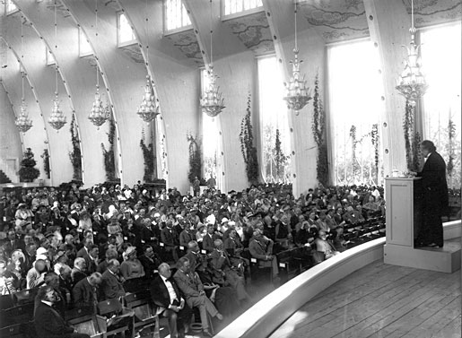

About Me
Name: Albert Einstein
Date of Birth: March 14, 1879
Albert Einstein-Theoretical physicist
I was born Albert Einstein in 1879 in Germany. As a young man, I was fascinated by math and science. I studied physics and thought deeply about the nature of time, space, energy, and matter
In my twenties I worked as a patent clerk while I researched and wrote my papers on special relativity and the photoelectric effect
My theory of relativity explained how motion can change measurements of time and space. My equation E=mc2 showed that tiny amounts of mass can be converted to huge amounts of energy.
My Papers
Photoelectric Effect Paper (1905):
- This paper explored the photoelectric effect, demonstrating that light can behave as both particles (photons) and waves. This work laid the foundation for quantum mechanics.In his research, Einstein investigated the behavior of light when it interacts with matter.

Electrodynamics of Moving Bodies (1905)
- This paper explored special relativity, Albert Einstein proposed that the laws of physics are the same for all observers and that the speed of light is constant, leading to revolutionary conclusions about time, space, mass and energy.
General Theory of Relativity (1915):
- Einstein's theory of general relativity expanded upon the special theory, providing a new perspective on gravity. It introduced the concept of spacetime curvature, explaining how massive objects like stars and planets influence the fabric of the universe
Hobbies
- Writing letters - Einstein carried on lengthy correspondences with friends and colleagues which allowed him to articulate his thoughts.
- Philosophy and politics - Einstein had a lifelong interest in philosophy and politics. e frequently spoke and wrote about his humanist views and social activism
- Playing the violin - Einstein was an avid violinist from childhood through the end of his life. Music was one of his greatest joys...
- Writing letters - Einstein carried on lengthy correspondences with friends and colleagues which allowed him to articulate his thoughts.
- Physics - Of course Einstein was devoted to physics and spent much time contemplating theories. But he saw physics as recreation and an escape from his professional work.

Albert Einstein delivering his Nobel Lecture to the Nordic Assembly of Naturalists in Gothenburg, Sweden, 11 July 1923.

Albert Einstein with his wife Elsa..

Albert Einstein visiting Amsterdam's experimental physicist Pieter Zeeman (left), with his friend Paul Ehrenfest (right), ca 1920.
 Nobel Laureates Walther Nernst, Albert Einstein, Max Planck, Robert A. Millikan and Max von Laue at a dinner given by Professor von Laue in Berlin, 11 November 1931.
Nobel Laureates Walther Nernst, Albert Einstein, Max Planck, Robert A. Millikan and Max von Laue at a dinner given by Professor von Laue in Berlin, 11 November 1931.Blogs
- Speaking Out Against Violence and War:I share my beliefs in pacifism and humanism. I discuss why I advocate against nationalism and for peaceful solutions
- How I Developed My Theory of Relativity:I explain how I came up with the ideas for relativity theory while working as a patent clerk. I discuss my thought experiments and breakthrough moments.
- My Love of the Violin:I talk about how playing the violin has brought me joy and creativity throughout my life. Music provides a nice balance to science.
- My Hopes for the Future of Physics:I reflect on my contributions to physics and share my hopes that new generations of scientists will continue making discoveries to understand the universe.